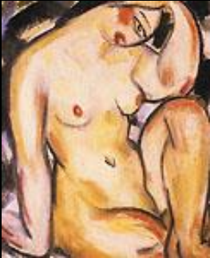

The painting below is Lin Fengmian’s take on a Chinese woman. This is a painting clearly inspired by western influences. It is a figure painting in the same vein as Henri Matisse’s figure paintings. The depiction of a Chinese woman is so unlike the traditional, modest, and pure depictions of women in Chinese history. It is breaking that tradition depicting a woman as either a sexualized figure or something more. Maybe an abstraction of a woman that goes against the ideal Chinese image of how a woman should present herself.

Nude. Lin Fengmian. Oil on canvas, 1934.